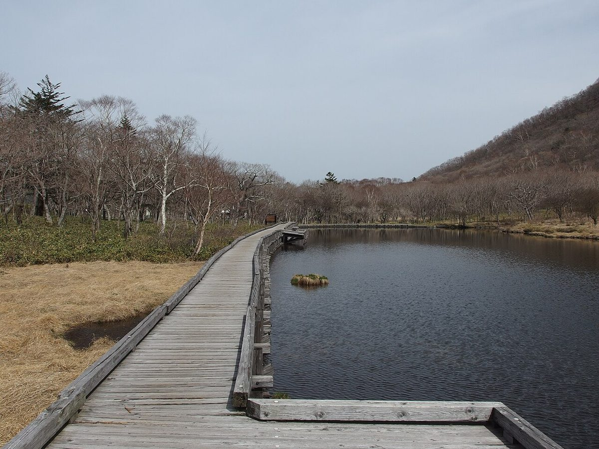
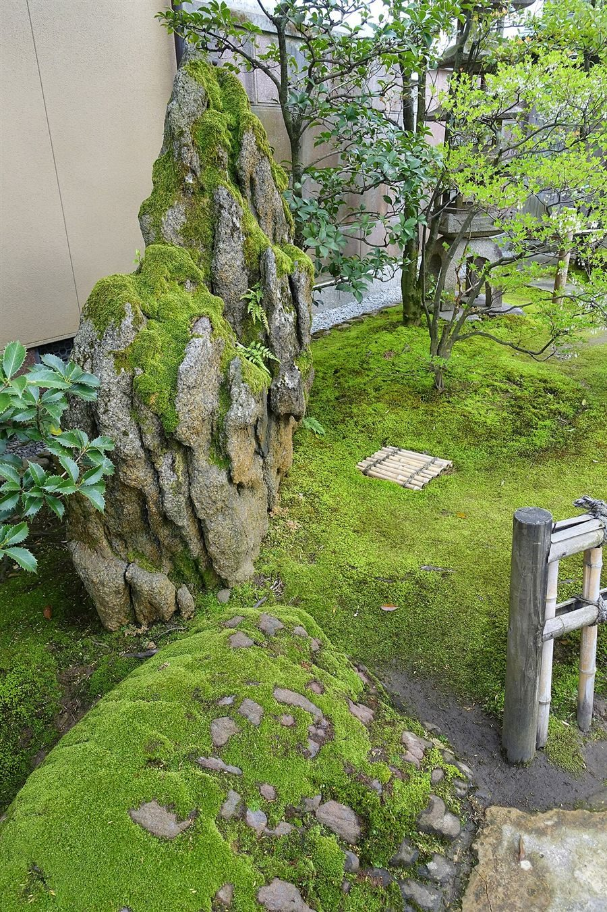
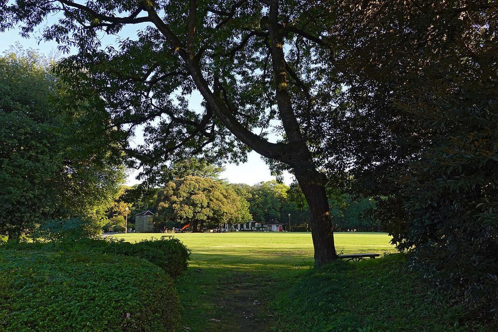
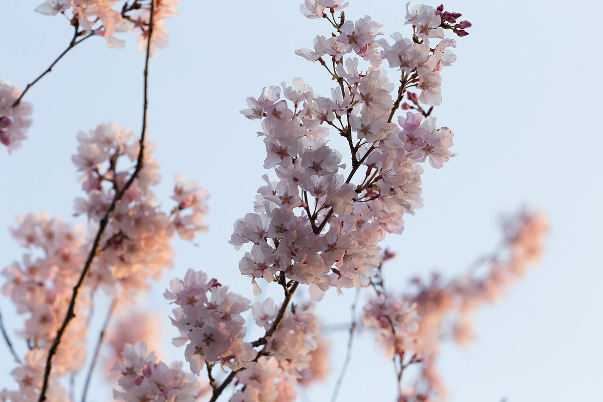

お店について
分かっている基本情報と、準備中の項目をまとめています。

01
コンセプト案(制作側の案)
山あいの、ひと休み
店の公式な理念ではなく、制作側の提案です。
入山という山あいの地域で、景色や空気を感じながらひと休みできる場所。そんなイメージを、このページの軸に据えました。
ドライブや散歩の途中に、気負わず立ち寄れること。季節ごとの景色の移ろいを、ゆったりと楽しめること。実際のお店の考えは準備中のため、ここでは制作側が思い描いた一つの案としてご覧ください。
02
お店の情報

| 店名 | ラ・テイエ |
|---|---|
| 業種 | カフェ |
| 所在地 | 群馬県安中市松井田町入山517-2 |
| 電話 | 090-3032-2539 |
| @latheiere0412(https://www.instagram.com/latheiere0412/) | |
| 店名の由来 | 準備中(お問い合わせください) |
| スタッフ | 準備中(お問い合わせください) |
| 店内の様子 | 準備中(お問い合わせください) |
03
季節の景色
季節の景色を楽しめる地域です。


お問い合わせ
お店のことで気になる点は、お電話またはInstagramからお気軽にどうぞ。